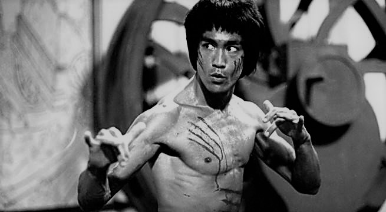

Bruce Lee
Most influential martial artist of all time

Bruce Lee in the movie "Enter the Dragon" (1973)
Heres a brief time line of Bruce's life:
-
1940 - Born Lee Jun-fan on November 27 in San Francisco
-
1946 - Official screen debut at age 6 in the movie
"The Birth of Mankind"
-
1952 - Enrols in primary school at La Salle College in
Hong Kong
-
1958 - Wins the Crown Colony Cha-Cha Championship in
Hong Kong
- 1959 - Leaves Hong Kong for San Francisco
-
1965 - Birth of Brandon Bruce Lee, Lee's first child
-
1967 - Opens Jun Fan Gung Institue in Los Angeles
- 1969 - Daughter Shannon Emery Lee is born
- 1973 - Dies on July 20 in Hong Kong
Ever since I was a child I have had this instinctive urge for expansion
and growth. To me, the function and duty of a quality human being is the
sincere and honest development of one's potential.
-Bruce Lee
If you wnat to read more about Bruce Lee you should read about him on
Wikipedia.